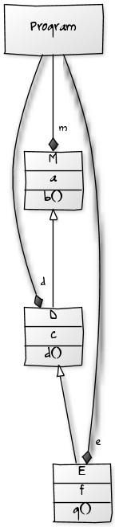

Study
the code in src/MDELite -- each "bubble" above represents a class.
Each arrow is a method (drawn from the class that lists the
method to the class that is output by the method).
The
hard part is to generate a set of Prolog tables from a diagram.
Use yUML or Violet to create a class diagram. And then use
the Conform program to create its Prolog tables. Example: the
file in the left-most column below is a yUML specification called
good.yuml. The class diagram in the middle column is what
yUML draws given this specification. The Prolog tables that are produced are shown in the right-hand column.
[M|a|b()]
[D|c|d()]
[E|f|g()]
[Program ]-m++[M]
[Program ]-d++[D]
[Program ]-e++[E]
[M]^-[D]
[D]^-[E] |  | table(yumlClass,[id,"name","fields","methods"]).
yumlClass(c1,'D','c','d()').
yumlClass(c2,'E','f','g()').
yumlClass(c0,'M','a','b()').
yumlClass(c3,'Program ','','').
table(yumlInterface,[id,"name","methods"]).
:- dynamic yumlInterface/3.
table(yumlAssociation,["name1","role1","end1","name2","role2","end2"]).
yumlAssociation('Program ','','','M','m','++').
yumlAssociation('Program ','','','D','d','++').
yumlAssociation('Program ','','','E','e','++').
yumlAssociation('M','','^','D','','').
yumlAssociation('D','','^','E','','').
|
To convert
good.yuml into a set of Prolog tables, run:
> java MDELite.Conform yuml good
File good.yuml.pl is produced, shown above.
In
general, filenames in MDELite are typically 3-tuples A.B.C: "A" is the
user-chosen-name of a diagram. "B" is its "type" (such as yuml or
violet), and "C" typically is "pl" a Prolog extension. So when
you list a directory in which you have been running MDELite programs,
all versions of the same user-chosen-name will be grouped together.
In
general, the most difficult programs to write translate non-Prolog
source to Prolog. In MDELite, there are 3 such methods:
- toUMLFpl (which translates a UMLF xml file to a UMLF Prolog file)
- toYumlpl (which translates a yuml specification to a Yuml Prolog file)
- toVioletpl (which translates a Violet xml file to a Violet Prolog file)
Look at their source code to see how they work.
PrintAlias
Occasionally,
it is very useful to map a database to another database, where the
names of the tables in one database are the same as the names of tables
in another. Prolog insists on tables with unique names. So
here's how you handle such issues, which I'll explain with a simple
example.
- database D1 has tables A and B.
- database D2 also has tables A and B. (These tables may have different attributes than D1.A and D1.B).
- your goal is to translate a D1 instance into a D2 instance.
Create
tables A and B as usual. But for D2.A and D2.B, use different
names, such as A2 and B2. In this way, your prolog model-to-model
transformation will reference 4 different tables -- A,B,A2,B2.
Now the key is when you printout database D2 or tables A2 and B2.
Before you print any table of D2, execute the following Prolog
predicates:
tableAlias(A2,A).
tableAlias(B2,B).
This tells the print rules to print "A" instead of "A2" when tuples of A2 are being printed. The same for B.
Encoding of Prolog Tables
It
is a matter of engineering to decide what Prolog tables to produce, and
then write programs that conform to this format. Look in libpl
for examples.
libpl/yuml.schema.pl defines the "Prolog database" schema of yUML tables (illustrated above). Here's its current contents:
/* file: yuml.schema.pl */
dbase(yuml,[yumlClass,yumlInterface,yumlAssociation]).
table(yumlClass,[id,"name","fields","methods"]).
table(yumlInterface,[id,"name","methods"]).
table(yumlAssociation,["name1","role1","end1","name2","role2","end2"]).
tuple(yumlClass,L):-yumlClass(I,N,F,M),L=[I,N,F,M].
tuple(yumlInterface,L):-yumlInterface(I,N,M),L=[I,N,M].
tuple(yumlAssociation,L):-yumlAssociation(N1,R1,E1,N2,R2,E2),L=[N1,R1,E1,N2,R2,E2].
A
database (dbase) has a name (yuml) and a list of tables (yumlClass,
yumlInterface, and yumlAssociation). Each table has a name (e.g.
yumlClass) and a list of attributes. Attributes whose names are
in "double-quotes" will have single-quoted values. Attributes
whose names are not in "double-quotes" have unquoted values. See
the
yuml.good.pl tables above
for examples. The last 3 rules called "tuples" are derived from
table declarations. What these rules do is to map tuples of
tables to a simple form that is easy to print. Eventually, tuple
declarations will be generated. But for now, they have to be
explicitly written in schema declarations.
Besides schema
declarations (which in effect defines a model without constraints),
model constraints also need to be specified. In
libpl/yuml.conform.pl
you will find the current set of constraints (in Prolog, of course)
that are imposed on instances of yuml tables. Currently 3
constraints are checked:
- classes and interfaces have unique names (uniqueNames)
- class hierarchies have no cycles (circular)
- inheritance hierarchies have no cycles (icircular)
There may be others that are subsequently added. If you look at the file, you will see that the last predicate defined (
run) evaluates all three predicates. Such run predicates are standard convension in MDELite:
run :- uniqueNames,circular,icircular.
Another
file that is associated with yuml schemas: yuml.run, which simply
invokes a Prolog rule to print to standard out a yuml database.
The contents of yuml.run is:
/* file: yuml.run.pl -- output the tables of a Yuml database */
run:-printDbase(yuml).
Finally,
one needs to translate yuml Prolog databases to database of other
types. The naming convention for such model-to-model
transformations is a Prolog file
libpl/yuml2X.pl,
where X is the name of another database. Presently, there is only
one other database to which yuml databases are translated, namely to
sdb (standard database). So in file
libpl/yuml2sdb.pl
you will find the Prolog rules to translate a yuml database into a sdb
database. That is, for each table in sdb, there is a Prolog rule
or rules to compute its contents from a yuml table. A complete
translation will print out the sdb tables (into some file).
To
see how this is done, look at the src/MDELite/Yumlpl.java file.
This file implements the YumlPL class in the above category.
In particular, look at the code for the toSDB method (whose
semantics are to translate a yuml database (i.e., Prolog file) to a sdb
database (Prolog file)):
public SDB toSDB(String extra) {
String[] array = {HomePath.homePath + "libpl/discontiguous.pl",
this.fullName, HomePath.homePath + "libpl/yuml2sdb.pl", HomePath.homePath + "libpl/sdb.schema.pl", HomePath.homePath + "libpl/print.pl", HomePath.homePath + "libpl/sdb.run.pl"};
SDB tmp = new SDB("tmp", array);
SDB result = new SDB(filename + extra);
tmp.executeProlog(result);
result.conform();
tmp.delete();
return result;
}
Here's
how this Java method works. (And if you can understand this
method, you can understand them all). Every file in MDELite
corresponds to an MDELite object. So a yuml.pl file corresponds
to a YumlPL object. A method for YumlPL objects is toSDB(x),
listed above. The "x" parameter is a string concatenated onto the
name of a generated prolog file. Typically x="", the empty
string. Here goes for the rest:
- a list of files is
produced -- these files will be concatenated to produce a tmp.sdb.pl
file. The first file on the list is libpl/discontiguous.pl, which
simply declares that Prolog table declarations will not be listed
sequentially. Look at the good.yuml.pl example above: you will see that
table declarations are indeed not listed sequentially, but are
distributed throughout the file.
- the next file on the list is the name of the file to which the YumlPL object is bound (i.e., a textual listing of its database).
- next,
the rules for translating a YumlPL database to a SDB database are
listed, folllowed by a declaration of sdb.schema file, and then a
general utility that prints databases.
- the SDB tmp variable is
created that represents the file tmp.sdb.pl, which is the concatenation
of all of the above-listed files.
- here's where it gets a little
tricky: every MDELite database is both a file and an object. One
has to be created before the other -- there's no other way around this.
So the convention in MDELite coding is to create the object
(above: result) first. Then execute the file that produces the Prolog
file (result.sdb.pl). That's what the tmp.executeProlog(result)
does: it executes tmp.sdb.pl and produces a file whose name was given
in the constructor of the result object.
- OK, so now a
result.sdb.pl (SDB database) was produced. The next thing is to
see if it conforms to SDB constraints. That's what the
result.conform() method invocation does.
- the tmp object/file is deleted, and the result (an SDB database) is produced.
Pretty much all MDELite methods are interpreted in the same way.
Outputting non-Prolog Files
Eventually,
a Prolog file needs to be translated into a non-Prolog file.
That's where the tool VM2T enters the picture. Read its
documentation here.